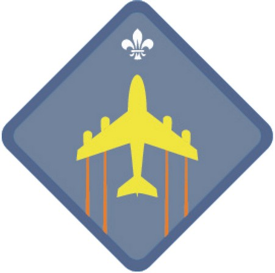

News
最新消息
2024/05/01：本旅童軍團成員 陸卓彤 在第27屆港島童軍毅行-虛擬跑挑戰組，獲得累積完成最長距離(童軍)銅獎。
2024/01/10：本旅童軍團獲香港童軍總會港島地域頒發「區總監嘉許金獎」，以表揚童軍團協助3名童軍成功考獲總領袖獎章。
2023/10/05：本旅童軍團成員 黃晞怡、王浩銓、陸卓彤 考獲童軍支部最高之獎章 -「總領袖獎章」。
2023/09/01：本旅童軍團獲香港童軍總會港島地域評選為「2023年優異旅團」
Introduction of Scout Section
童軍支部簡介
童軍訓練採取小隊制度形式，配合歡愉富吸引力而有價值之有進度性的訓練，引導十一至十六歲之成員按部就班地從戶外群體活動與訓練中一同策劃、學習和經歷，鍛鍊領導才能，並確認及表揚一起實踐的成果，
以促進這個階段之少年人身心精神之陶冶與啟發，以貫徹整個童軍運動連續性訓練，達成童軍支部訓練之目的。
童軍成員除可因應個人技能及興趣考取各專科徽章（專章）外，亦可同時考取四個進度性獎章（進度章），包括「童軍探索獎章」、「童軍標準獎章」、「童軍高級獎章」及「總領袖獎章」。
童軍活動的基本技能，如露營、烹飪、探險等及其他興趣，已編訂於「童軍探索獎章」及「童軍標準獎章」之內。「童軍高級獎章」則對技能知識要求更高，並加入自立及服務他人等項目。
「總領袖獎章」是童軍支部最高之獎章，加入了教授隊員技能及策劃活動元素，目的是考驗及增強責任心及領導才。
童軍進度性的訓練綱要在於鼓勵新加入的童軍同時亦能滿足資歷較深的童軍之需求，環繞小隊制度為中心。此訓練階段之特點在於使一名童軍由初加入起就能完全投入童軍活動。它提供戶外活動資料，
包括給予年長之童軍探險活動，給予服務的機會及領導才的訓練，同時此訓練階段也要使童軍能保持其興趣，以完成其在童軍團中近五年的童軍生活。
Scout Patrol Leader, Patrol Leader & Assistant Patrol Leader
團隊長、小隊長及副小隊長
小隊制度是童軍支部一種特色，這個制度給予青少年機會去嘗試已選擇及實踐喜愛的活動。童軍們由六至十人編組為一小隊並由一小隊長領導。小隊長會議是由小隊長及團隊長組成，主要功能是建議、策劃及協助團推行活動和訓練，並對各小隊之活動作出支援及協調。
|
Scout Patrol Leader |
Eason Sy / Allison Luk
施家豪 / 陸卓彤 |
||
|---|---|---|---|
|
Patrol Leader |
Vacant
懸空 |
Chloe Chan
陳栩彤 |
Vacant
懸空 |
|
Assistant Patrol Leader |
Izellah Ku
古蕊嘉 |
Hayden Cheung
張浩俊 |
Sean Yip /
Mark Wong 葉爽 / 汪昊樺 |
Progressive Award
進度性獎章
|
Scout Pathfinder Award |
考獲「童軍探索獎章」名單如下： |
|---|---|
|
Scout Standard Award |
考獲「童軍標準獎章」名單如下： |
|
Scout Advanced Award |
考獲「童軍高級獎章」名單如下： |
|
Chief Scout's Award |
考獲「總領袖獎章」名單如下： |
Sea Activity Badges
海上活動徽章
|
Oarsman |
考獲「艇工」名單如下： |
|---|---|
|
Boatman |
考獲「水手」名單如下： |
Air Activity Badges
航空活動徽章
|
Basic Air Activity |
考獲「初級航空活動」名單如下： |
|---|---|
|
Intermediate Air Activity |
考獲「中級航空活動」名單如下： |
|

Advanced Air Activity |
考獲「高級航空活動」名單如下： |
Other Awards And Badges
其他奬章及徽章
|
Leadership Award |
考獲「領導才獎章」名單如下： |
|---|---|
|
Service Flash |
考獲「服務獎章」名單如下： |

Venture Scout Link Badge |
考獲「深資童軍先修章」名單如下： |
Additional Information
其它資訊
如想了解更多童軍支部資訊，請登入 童軍資訊站 瀏覽。